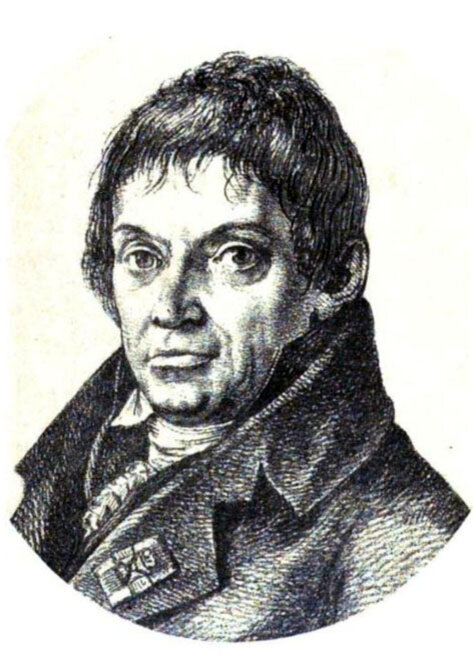
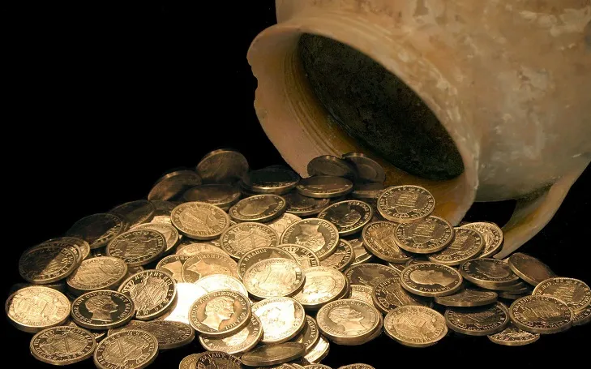

Начало нумизматике положил Иосиф-Илариус Эккель. Он был профессором археологии в Венском университете. Эккель классифицировал древние монеты в зависимости от их географического положения. Результатом его усилий стала восьмитомная "Доктрина ветеринарного нумера" (1792-1798 гг.), изданная в Вене.
В начале XIX века австрийский профессор Иозеф Мадер опубликовал трехтомную "Критическую историю средневековых денег". Он проанализировал не только внешний вид стальных банкнот, но и их связь с политической историей, определявшей их статус.
В 1835 г историк Иоахим Лелевель опубликовал свой трехтомный труд "Средневековая нумизматика". Он попытался показать, насколько разнообразны темы с монетами. К трехтомнику прилагался справочник с эскизами, таблицами и картами.
Каково происхождение слова "монета"?
Ответ на этот вопрос дает римская серебряная монета.
На монете магистрата Тита Каллиция (45 г. до н.э.) на аверсе изображена голова богини и слово "Монета". Первоначально это слово было одним из прозвищ богини Юноны. Оно означало "богиня предупреждения". В ее храме находился монетный двор. В честь него и богини Юноны чеканившиеся монеты назывались монетами. На реверсе денария изображен ряд монетных инструментов. Это щипцы, удерживающие раскаленный слиток, и нижний штемпель - квадратный столб. Здесь же изображен остроконечный колпак с лавровым венком. Она принадлежит богу Вулкану, покровителю кузнецов. Изучение типов монет дает гораздо больше информации, чем политическая история. Историки-нумизматы могут быть полезны и историкам искусства.
Известна скульптура греческого скульптора Праксителя, изображающая Гермеса с Дионисом на левой руке. В какой позе стоял Гермес, в каком положении находилась его избитая правая рука и что он держал? Эти вопросы оставались без ответа до тех пор, пока не стала известна монета из фракийского города Анхиала. На монете изображен прототип статуи Гермеса. Гермес держит в поднятой руке виноградную кисть и показывает ее младенцу Дионису.
Изучение типов монет дает много информации не только по политической истории. Историки-нумизматы могут быть полезны и искусствоведам.
Важным событием стало издание в 1891-1905 гг. в трех томах "Трактата по нумизматике Средних веков". Его авторами были А. Энджелл и Р. Селлур. Этот труд не имеет себе равных по полноте фактического материала и объему содержащейся в нем информации. Она по праву признана энциклопедией средневековой нумизматики. Ее недостатком, который одновременно является и достоинством, является то, что в ней минимизировано изложение теоретического и максимизировано фактического материала Статус нумизматики изменился в XX веке. Исследования переместились из частных кабинетов в государственные коллекции, понятие "нумизмат" отделилось от понятия "коллекционер". Благодаря усилиям исследователей наука значительно продвинулась вперед.
